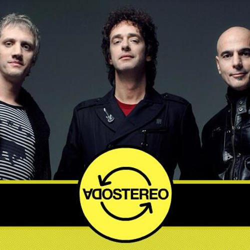

Welcome to my personal portfolio! Here you can explore my labs, assignments, and projects. This page documents my learning process, the skills I develop, and the work I complete over time.

HTML & CSSA website dedicated to Soda Stereo, featuring a biography of the band, information about its important works, and a collection of my favorite songs.
Skills: HTML structure, CSS styling, images, hyperlinks, and page navigation.
View ProjectThis portfolio will continue to grow as I complete new labs, assignments, and personal projects.